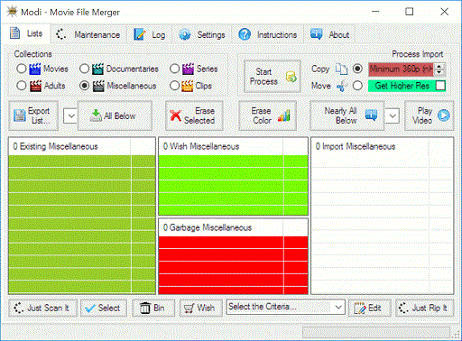
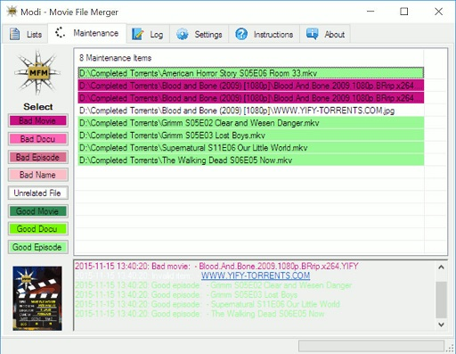
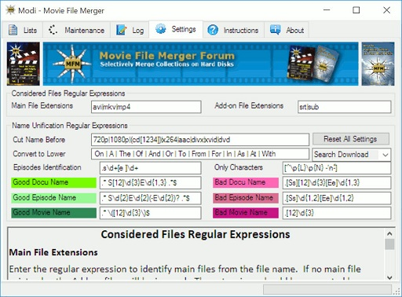
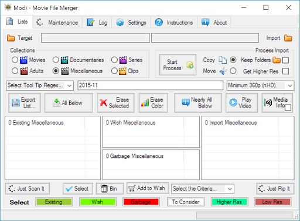
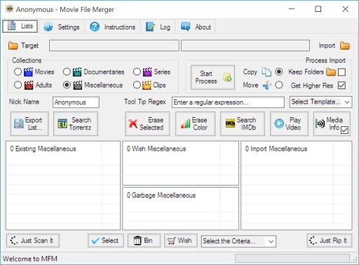
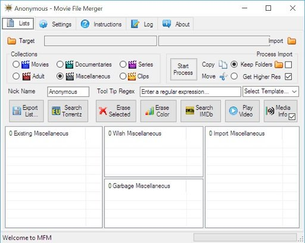
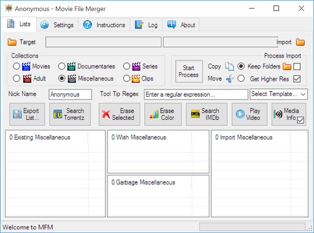
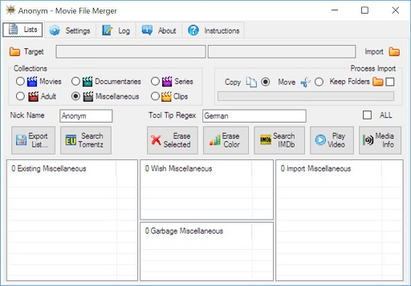
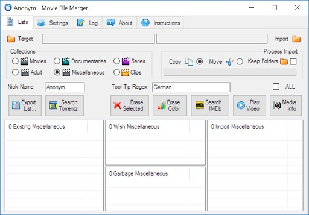

Combine/Maintain Video Collections on Hard Disks
Movie File Merger Original Downloads
The latest version of the Movie File Merger is compatible with Windows 7, 8, and 10. Click on Download Now below to get it for free.


The Movie File Merger User Manual explains the general usage of Movie File Merger and how to interact with the supporting programs. You can download it as ePUB, MOBI or PDF. Some information about the general organization of stuff can be found in How to Organize Videos on Your Hard Disks, which you can download as ePUB, MOBI or PDF.
As Movie File Merger advances and time progresses, it cannot be avoided that both books will get a little outdated. I'll try to keep that effect to a minimum, but it is all the time a good idea to check out the screen tips in Movie File Merger.
Supporting Applications

Movie File Merger uses or interfaces with a series of other programs. So, if you want to use the full functionality, you should install the below shown programs. All of them can be download and used for free by following the respective links above or by clicking on the according boxes below.
- TeraCopy to copy or move the actual files.
- Firefox to browse the web for information, torrent downloads, or read the manuals on-line.
- FileBot to fix the names of movie or series.
- GOM or VLC to check out the actual quality or content of the video.
- Tixati or uTorrent to download the video.
- MediaInfo to show detailed media information of the video.
- Windows Explorer to drag and drop folders into and from Movie File Merger or move files to the recycle bin.
The Source
If you are interested in the details about how Movie File Merger is made, download the complete project inclusive source code as ZIP File or TAR Ball. Movie File Merger is open source and the source code can be viewed or downloaded on...

Of course you are also very welcome to fork Movie File Merger on GitHub and contribute to the program.
The Distribution

You are welcome to host the Movie File Merger installer on your download site. The PAD file for the latest version of Movie File Merger can be found on AppVisor.
PAD® is the Portable Application Description, and it helps authors provide product descriptions and specifications to on-line sources in a standard way, using a standard data format that will allow webmasters and program librarians to automate program listings. PAD saves time for both shareware authors and webmasters.
100% Clean
Use one of the site listed below, if you prefer to have the download virus checked.
Third Party Download Sites

If you prefer to get Movie File Merger from another download site, click on the according link below. Just make sure that you get the latest version. Starting with version 0.2.0, Movie File Merger checks for a newer version to download at start up. If you want to contribute without spending too much time or money, just leave a comment or review on one of the download sites.


Release History
Each release contains also minor bug fixes and improvements, which are not explicitly mentioned here...
Release 0.4.1 --- 2015-12-06
This release streamlined the user interface...
  - Checked the Maintenance tab.
- Checked the FileBot interface.
- Simplified the Lists tab.
- Simplified the Setting tab.
Release 0.4.0 --- 2015-11-22
Release 0.4.0 --- 2015-11-22
This release added the Maintenance tab...
- Interface to FileBot, to rename the actual files.
- Interface to Windows Explorer, to move or delete files.
- Minimum resolution when processing videos.
- Many minor improvements and fixes.
Release 0.3.0 --- 2015-08-08
Release 0.3.0 --- 2015-08-08
This release adds the new action bar, to make the operation simpler...
- Just Scan It, to scan for collections on all connected hard disks.
- Just Rip It, to get everything in the import folder.
- Automatic wishing or binning with predefined criteria.
- Minor improvements for Windows 10.
Release 0.2.1 --- 2015-06-07
Release 0.2.1 --- 2015-06-07
The release fixes the TeraCopy interface problem with languages other than English.
Release 0.2.0 --- 2015-04-05
Release 0.2.0 --- 2015-04-05
This release contains several improvements and bug fixes...
- Made Tool Tip Regex selectable
- Made selection based on horizontal resolution
- Improved Settings
- Added more Tool Tips
- Added various minor improvements
Release 0.1.1 --- 2015-01-11
Release 0.1.1 --- 2015-01-11
This release contains minor fixes like...
- Improved pictures
- Updated About tab
- Updated short instructions
- Refactored the code
Release 0.1.0 --- 2014-11-23
Release 0.1.0 --- 2014-11-23
That's the first Movie File Merger release to create a stable point on GitHub. I have been using Movie File Merger already for over a year, so the implemented functions are already quite stable.

Combine/Maintain Video Collections on Hard Disks
Home |
Screenshots |
Forum |
Manuals |
Downloads
Donations |
Other Stuff |
Contact |
License
Copyright © 2012-2016 Reinhold Lauer